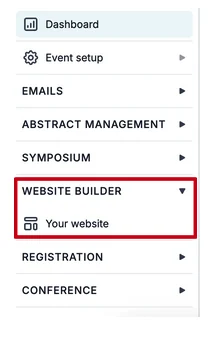
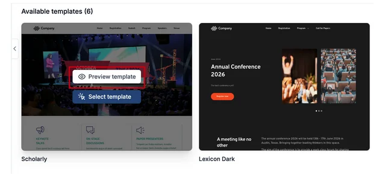
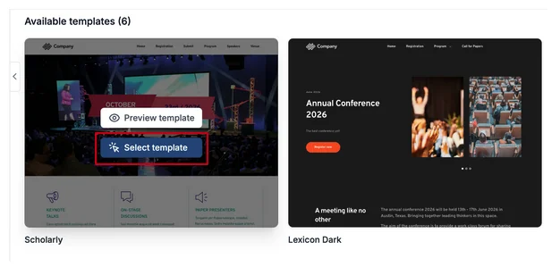
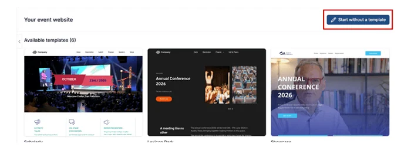
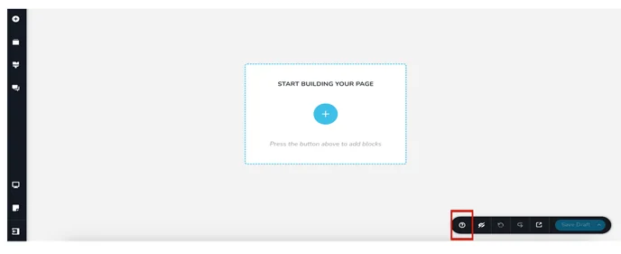
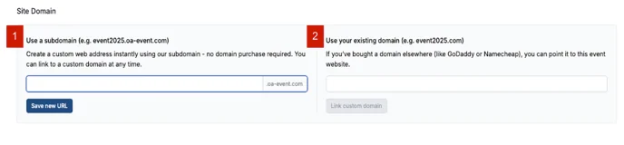
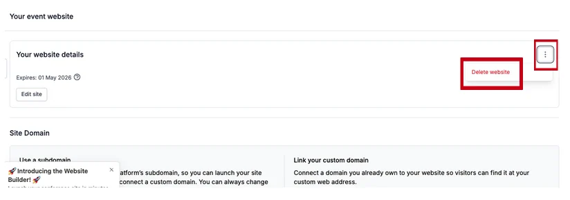

Creating your event website
Learn how to create your own website for your academic event, in this simple guide.#
What is the website builder feature?
Oxford Abstract’s new website builder allows event admins to create their own custom website using a drag-and-drop functionality.
The existing templates have been designed specifically for academic conference sites, making it easy for you to get your event website up and running as quickly as possible.
Below is a step-by-step guide to help you create your new website for your event through Oxford Abstracts.
From your dashboard, navigate to the left-hand column and click on Website Builder > Your Website.

You will see that you have six website templates to preview and choose from, or you can design your own event website without a pre-made template.

Preview & Select Website Templates
Before you choose which template to use, hover your mouse over it and click the Preview Template button that pops up.

Then, when you have decided on the template you’d like to use, hover over it with your mouse and click on the Select Template button.
From here, follow the instructions on the screen on how to use the website builder template.

Create Your Website
Although using one of the templates will be quicker to do, providing you with a faster and more streamlined experience, you may prefer to create your own template.
To design your own event website, click on the Start Without A Template button at the top right of the page, and then follow the instructions.

Should you wish to keep your website live for longer, there will be a small monthly fee to pay, upon the expiry date.
You will be notified about the expiry of your website closer to the end date and provided with an option to extend its published status.

How to start editing pre-made templates or building your own template
To access tutorials on how to edit your template/website pages, click on the ‘?’ icon on the bottom right of your screen.

A pop-up screen (below) will appear to the right with available guides to help you navigate building your template.

Key considerations when working with templates (on the builder)
Global blocks:
Some of our templates use global blocks. These are the blocks we want to appear on all of the pages of the website.
These can be found when you click on “add block” and then navigate to ‘global blocks’ tab.
Saved:
If you’ve created a block that you think you’ll use again, we recommend clicking on the heart icon and saving it. These can be found in the ‘Saved’ blocks tab to make it easier for you to slot into new pages.
Preview on mobile:
If you’d like to see what your website looks like on mobile or tablet, click the device icon on the bottom left and select the device you’d like to preview.
All of our templates are mobile responsive, but if you make changes to those templates, you may want to double-check.
Add Your Website Domain
When you have built your website, you can then configure your website domain.
This means you can create your own website address (domain) for your event or add your current domain.
Here are your two options to choose from:

1. Use a subdomain
This allows you to use our platform’s subdomain of .oa-evevent.com.
For example, if your conference name is ‘Oxford Abstracts 2026’, then an appropriate subdomain might be oxfordabstracts2026.oa-event.com.
Using a subdomain means you can launch your site immediately without needing to buy or connect to a custom domain.
To do this, add the name you would like to use for the subdomain and Click ‘Save new URL’.
2. Link your custom domain
This allows you to connect a domain that you already own.
For example, if you’ve bought a domain elsewhere (like GoDaddy or Namecheap), you can point it to this event website.
The domain will look like event2026.com**
- Start by adding your website domain to the input field and clicking ‘Link to custom domain.
- You’ll then be taken to a new screen with instructions on how to connect your custom domain.
- Please follow the instructions on the page. Note that it can take up to 24 hours for the domain to be linked.
- Once your domain is linked, the instructions on how to connect your custom domain will disappear
How To Delete A Chosen Template
If you have chosen a template you don't want to use, click on the Website Builder Tab on the left-hand panel.
On the next page, click on the three dots on the right and click on Delete Event.

Should you need any further assistance, please get in touch with our Support team via this Contact Form.
Didn't solve it? Ask our support team
No question is too small, and there's no charge for asking. Raise a ticket and someone who knows the software will pick it up.
Did this page solve it?
Thanks — this helps us fix it.